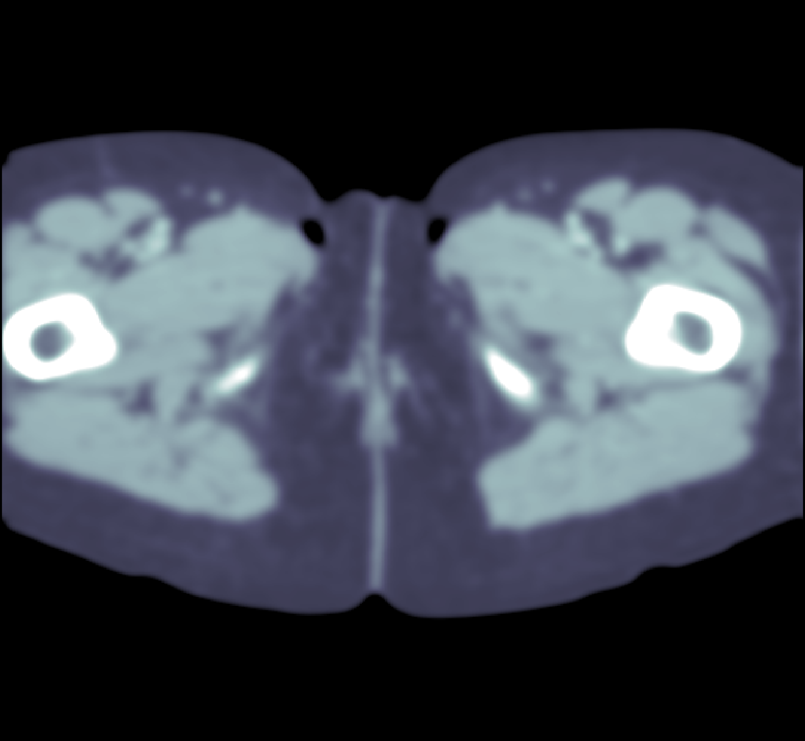
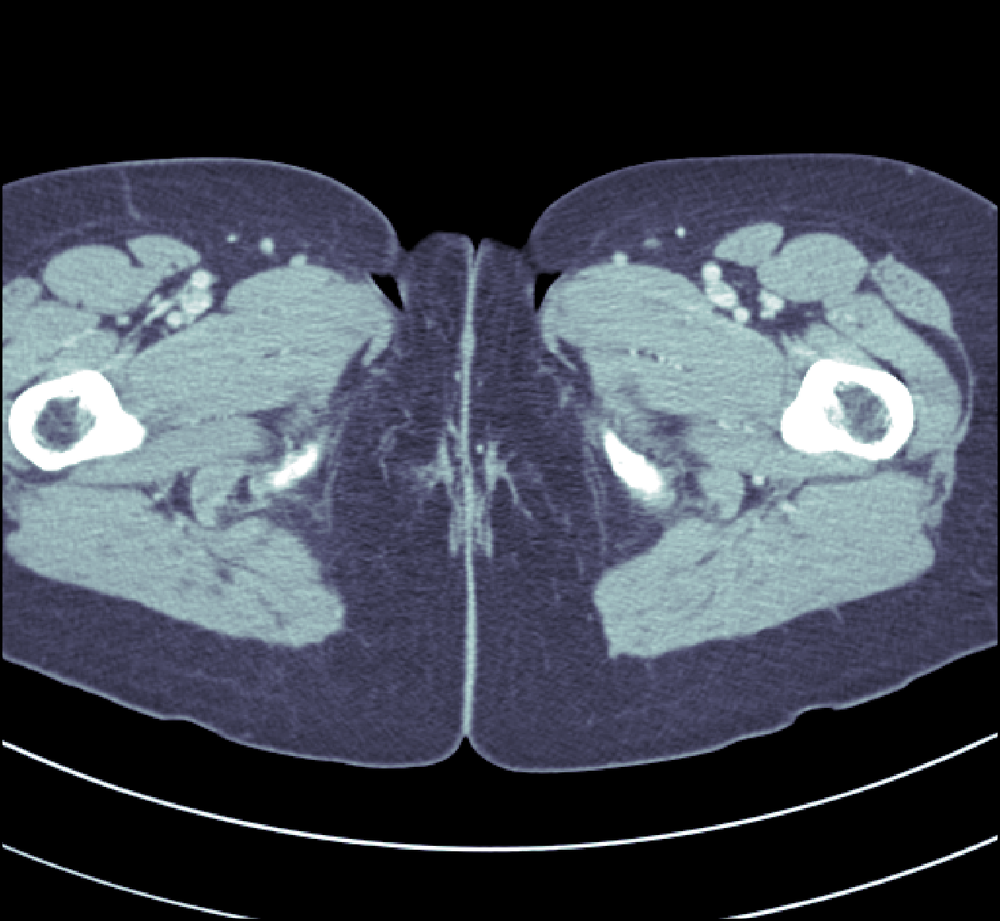
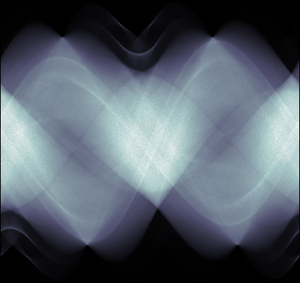
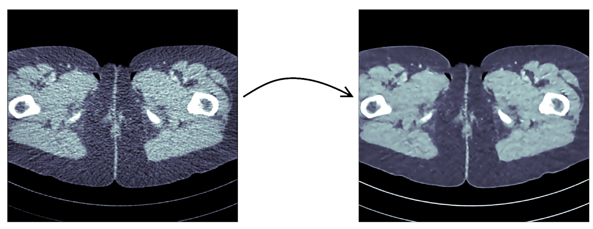
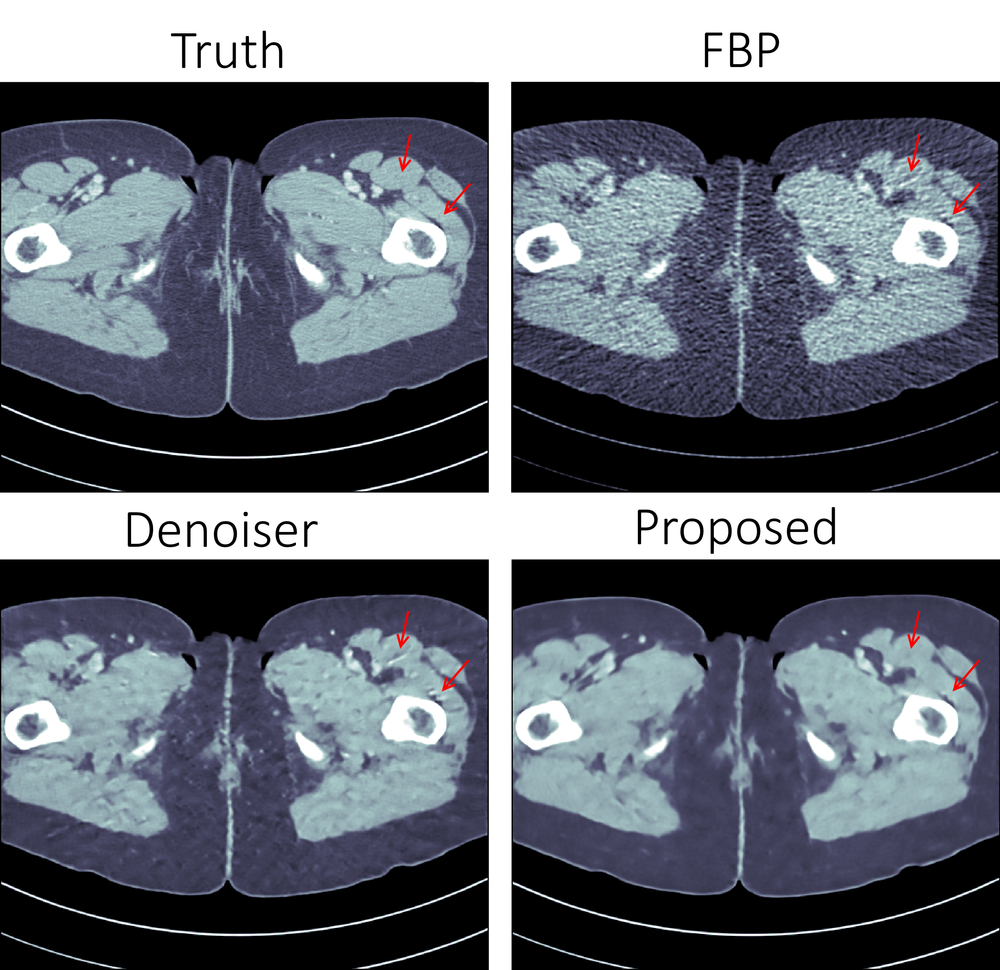

An introduction to some Machine Learning methods for image reconstruction.
Suppose that you were given a blurred image:

Then you could probably tell that it was generated from this image:

But what about if you instead were given indirect observations of the image, such as the line integrals taken over some set of lines:

Would you still tell it came from the image above? Probably not. But we will demonstrate how we can teach a computer to do it.
Introduction
These problems are called the deblurring and radon inversion problems respectively and are both examples of inverse problems. In inverse problem we seek to find (reconstruct) some parameter given indirect observations. Mathematically this can be stated as finding some parameter $f$ that are connected to measured data $g$ through a known forward model $\mathcal{T}$:
$$ g = \mathcal{T}(f) + noise $$
Several classical image processing problems such as denoising, inpainting, deblurring and superresolution can be cast into this form, but it is also a good model for more complicated problems such as Magnetic Resonance Imaging (MRI) and Computed Tomography (CT).
Machine learning for inverse problems
If the forward model is local, such as in deblurring where each datapoint is affected only by a small neighborhood of the image, finding the unknown parameter from data using machine learning is at least on a conceptual level straightforward. Simply use any standard convolutional neural network and known pairs $(g, f_{\text{true}})$ and train the neural network to map $g$ to $f_{\text{true}}$.
But what happens when $\mathcal{T}$ is more complicated? In Computed Tomography, the parameter $f$ is an image of the interior of the patient and the forward model is given by the Radon Transform which computes all line integrals of the image:
$$ \mathcal{T}(f)(\ell) = \int_{\ell} f(x) dx \quad \ell \text{ is a line in } \mathbb{R}^2 $$
If we compare this to the deblurring problem, we see that while the deblurring problem has a local relationship between parameter and data, the radon transform has a global relationship. Here two points on opposite sides of the image can still influence the same datapoint as long as they lie on the same line. And since the forward model is global, so is the inverse problem. This means that classical local machine-learning approaches based on convolutions will not work.
One way to solve this would be to use fully-connected layers instead of convolutions, but this quickly becomes infeasible. For example in the example above a single fully connected layer between data and signal would require a staggering $2.6 \cdot 10^{11}$ weights. Storing these in single precision would require one terabyte of memory. For a single layer.
This is obviously not a workable solution.
Learned denoisers
One of the most obvious solutions to this is to somehow recast the problem to an image-to-image problem. The most popular way of doing this is to first perform some initial (non machine-learning) reconstruction, e.g. Filtered Back-Projection (FBP):
Once this is done we can use any standard machine-learning approach to “denoise” the initial reconstruction by training a neural network to take the initial reconstruction as data and return the ground truth.
Several groups have done this and the results are in fact quite remarkable, outperforming previous state of the art methods:

However, the method leaves a sour taste. Sure the images certainly look better, but the only input was the initial reconstruction, so could it truly show anything that wasn’t already there?
Learned Primal-Dual
This observation leads to a painful conclusion: in order to obtain a reconstruction with more information than current reconstruction methods, we need to work directly from raw data. But as we noted above, fully learning how to do this is practically impossible.
The solution is to take a middle way, to incorporate enough a-priori information to make the problem tractable and then learn the rest.
The most powerful prior information we have is the forward operator $\mathcal{T}$, but it only maps images to data. How would we go from data to images? One answer is to use the adjoint operator $\mathcal{T}^*$.
The idea of our proposed solution (called the Learned Primal-Dual algorithm) is to use these operators alternatively. First we use a convolutional neural network to update the data (a so called dual step), then apply $\mathcal{T}^*$ and use the result as input to another neural network which updates the reconstruction (the primal step), then apply $\mathcal{T}$ and use it as input to a neural network that updates the data, and so on. This is iteratively performed a few times (10 in our experiments), at which point we have a final reconstruction.
We train end-to-end with raw measured data as input and the reconstruction as output, without any initial reconstruction or other external information.
The good thing about this is that we separate the global aspect of the problem into the forward model and its adjoint and only need to learn the local aspects. The bad thing is that to train the network we need to perform back-propagation through this neural network that among others contain 10 calls to the forward operator, 10 calls the the adjoint operator and 20 small neural networks in between. We did this using some magic with Operator Discretization Library ODL and TensorFlow.
Results
If you ask me, the results look quite good and I especially appreciate that the method is able to avoid some artifacts (some examples shown with red arrows) that the denoiser wasn’t able:

The quantitative results are also quite good and we outperform learned denoising w.r.t both Peak Signal to Noise Ratio (PSNR) and structural similarity index (SSIM). The runtime is not too shabby either and we manage to do all of this using only $2\%$ of the trainable parameters used in the denoiser.
| Method | PSNR (dB) | SSIM | Runtime (ms) | Parameters |
|---|---|---|---|---|
| FBP | 33.65 | 0.83 | 423 | 1 |
| Denoiser | 41.92 | 0.94 | 463 | $10^7$ |
| Proposed | 44.11 | 0.97 | 620 | $2.4 \cdot 10^5$ |
Read more
If you found this interesting you should read our article “Learned Primal-Dual Reconstruction” on arXiv which describes the method in depth and gives a broader overview of what others have done in this exciting field. You could also have a look on the source code.